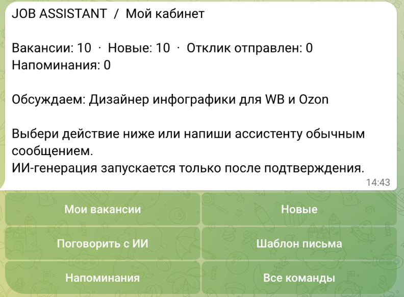
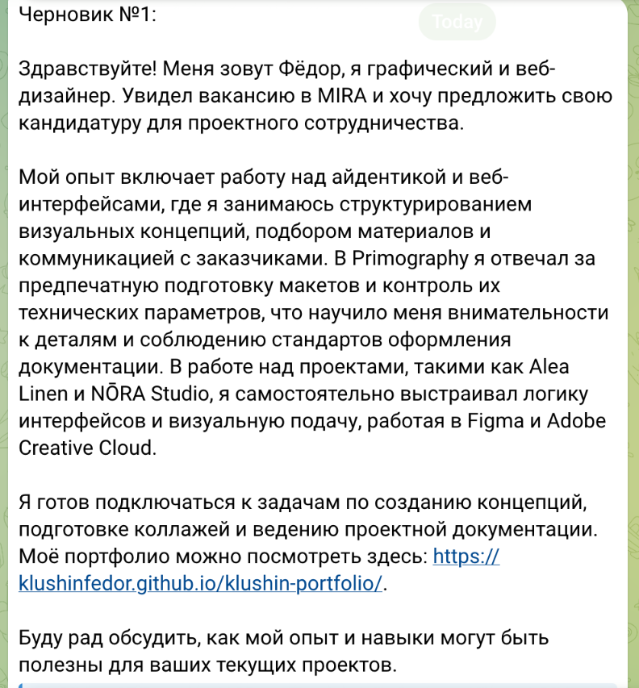
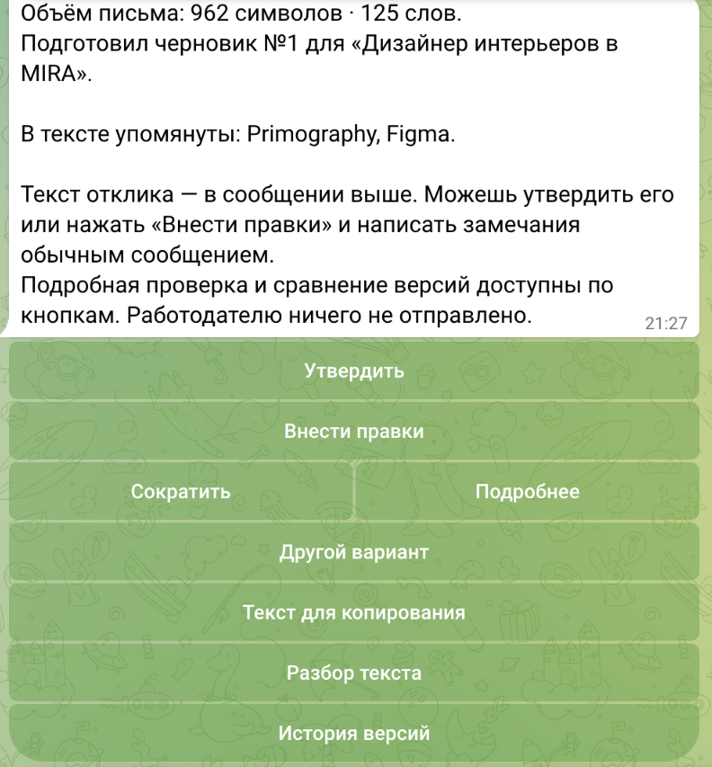

Telegram-бот · ИИ-помощник
Telegram Job Assistant
Присланные вакансии, черновики откликов и ответы на анкеты — в одном диалоге.
Задача
Вакансии остаются в переписке, а подготовка каждого отклика требует заново собирать опыт и ответы. Нужен личный инструмент, который сохраняет контекст и помогает подготовить текст.
Моя роль
Постановка задачи, проектирование диалогов и кнопок, настройка профиля кандидата и разработка интеграции с ИИ с помощью ИИ-инструментов.
Пользовательские сценарии
- Прислать вакансию и сохранить её для дальнейшей работы.
- Подготовить черновик отклика на основе вакансии и своего опыта, затем проверить и отредактировать текст.
- Передать вопросы анкеты текстом, скриншотом или ссылкой на доступную публичную форму.
- Подтвердить запрос к ИИ, получить ответы по вопросам и скопировать их для самостоятельной отправки.
Бот не отправляет отклики и не заполняет формы вместо пользователя. Закрытые формы и страницы, которые не удаётся прочитать по ссылке, можно передать скриншотами.
Экраны Telegram-бота



Результат
Личный Telegram-инструмент для подготовки откликов и ответов на анкеты. Сценарий можно адаптировать под задачи клиента: обработку входящих запросов и подготовку текстов.
Нужен похожий сервис для вашей задачи?
Обсудить задачу